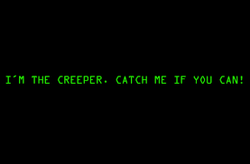

El universo del malware es infinito y está constantemente en evolución. Sistemas antivirus implantados en servidores de correo o corporativos ofrecen unos resultados bastante aceptables pero siempre van un paso por detrás de las nuevas muestras y, por tanto, no son efectivos al 100% por lo que siempre se pueden dar casos de programas maliciosos que eluden estos sistemas y alcanzan el equipo del usuario final, consiguiendo ejecutarse.
Una vez que un equipo está infectado, resulta vital actuar con rapidez para minimizar el impacto que pueda tener en el propio sistema o en el resto de la organización por lo que es crucial identificar de qué espécimen se trata y eliminarlo.
Módulo de Seguridad y Alta Disponibilidad
3.2. Software malicioso
Historia
Años 40
1949. Programas almacenados
 Año en que Von Neumann estableció la idea de programa almacenado y expuso La Teoría y Organización de Autómatas Complejos, donde presentaba por primera vez la posibilidad de desarrollar pequeños programas replicantes y capaces de tomar el control de otros programas de similar estructura. Si bien el concepto tiene miles de aplicaciones en la ciencia, es fácil apreciar una aplicación negativa de la teoría expuesta por Von Neumann: los virus informáticos, programas que se reproducen a sí mismos el mayor número de veces posible y aumentan su población de forma exponencial.
Año en que Von Neumann estableció la idea de programa almacenado y expuso La Teoría y Organización de Autómatas Complejos, donde presentaba por primera vez la posibilidad de desarrollar pequeños programas replicantes y capaces de tomar el control de otros programas de similar estructura. Si bien el concepto tiene miles de aplicaciones en la ciencia, es fácil apreciar una aplicación negativa de la teoría expuesta por Von Neumann: los virus informáticos, programas que se reproducen a sí mismos el mayor número de veces posible y aumentan su población de forma exponencial.
Años 70
1972. Creeper y Reaper
En 1972, Robert Thomas Morris creó el que es considerado cómo el primer virus propiamente dicho: el Creeper era capaz de infectar máquinas IBM 360 de la red ARPANET (la precedente de Internet) y emitía un mensaje en pantalla que decía “Soy una enredadera (creeper), atrápame si puedes”. Para eliminarlo, se creó otro virus llamado Reaper (segadora) que estaba programado para buscarlo y eliminarlo. Este es el origen de los actuales antivirus.
Años 80
1981. Elk Cloner
 En la década de los 80 los PC ganaban popularidad y cada vez más gente entendía la informática y experimentaba con sus propios programas. Esto dio lugar a los primeros desarrolladores de programas dañinos y en 1981, Richard Skrenta escribe el primer virus de amplia reproducción: Elk Cloner, que contaba el número de veces que arrancaba el equipo y al llegar a 50 mostraba un poema.
En la década de los 80 los PC ganaban popularidad y cada vez más gente entendía la informática y experimentaba con sus propios programas. Esto dio lugar a los primeros desarrolladores de programas dañinos y en 1981, Richard Skrenta escribe el primer virus de amplia reproducción: Elk Cloner, que contaba el número de veces que arrancaba el equipo y al llegar a 50 mostraba un poema.
1984. CoreWar
En 1959, en los laboratorios de Bell Computer, tres jóvenes programadores: Robert Thomas Morris, Douglas Mcllroy y Victor Vysottsky, crean un programa denominado Darwin. En 1984, se retomaría la idea como CoreWar basado en la teoría de Von Neumann y en el que el objetivo es que programas combatan entre sí tratando de ocupar toda la memoria de la máquina eliminando así a los oponentes. Este juego es considerado el precursor de los virus informáticos.
{kind=link}
Este mismo año, Frederick B. Cohen acuña por primera vez el término virus informático en uno de sus estudios definiéndolo como “Programa que puede infectar a otros programas incluyendo una copia posiblemente evolucionada de sí mismo”.
1988. Jerusalem
En 1988 hace su aparición el virus Jerusalem o Viernes 13, que era capaz de infectar archivos .EXE y .COM. Su primera aparición fue reportada desde la Universidad Hebrea de Jerusalem y ha llegado a ser uno de los virus más famosos de la historia.
{kind=link}
Panda Security - Virus Viernes 13
Años 90
1999. Happy
 En 1999 surge el gusano Happy desarrollado por el francés Spanska que crea una nueva corriente en cuanto al desarrollo de malware que persiste hasta el día de hoy: el envío de gusanos por correo electrónico. Este gusano estaba encaminado y programado para propagarse a través del correo electrónico.
En 1999 surge el gusano Happy desarrollado por el francés Spanska que crea una nueva corriente en cuanto al desarrollo de malware que persiste hasta el día de hoy: el envío de gusanos por correo electrónico. Este gusano estaba encaminado y programado para propagarse a través del correo electrónico.
Siglo XXI
2000. Autorun
El objetivo principal de este virus es propagarse y afectar a otros ordenadores. Tiene distintos métodos de propagación:
{kind=link}
- A través de unidades mapeadas: El virus comprueba si el ordenador infectado se encuentra conectado a una red y en caso afirmativo, realiza un inventario de todos los equipos de la red y crea una copia de sí mismo en cada uno de los ordenadores.
- Propagación a través de recursos compartidos de red: En caso de que el ordenador se encuentre conectado a una red, el virus intenta acceder a las unidades compartidas, utilizando contraseñas que son típicas o fáciles de adivinar
- Distribución de archivos infectados: Este virus no se propaga automáticamente, para ello necesita copiarse en archivos del siguiente modo: Los archivos infectados pueden entrar al ordenador a través de las vía actuales: disquetes, mensajes de correo electrónico con archivos adjuntos, descargas de Internet, redes de intercambio de archivos, etc.
2003. I Love You
En el año 2000 hubo una infección que tuvo muchísima repercusión mediática debido a los daños ocasionados por la infección tan masiva que produjo (más de 50 millones de ordenadores infectados). Fuel el gusano I Love You o LoveLetter, que, basándose en técnicas de ingeniería social infectaba a los usuarios a través del correo electrónico.
Noticia en El Pais: "El virus 'I love you' paraliza millones de ordenadores en todo el mundo"
2004. El año de los gusanos
Se convirtió en el gusano de correo electrónico que más rápido se propagó (a partir de enero de 2004), superando los registros anteriores establecidos por el gusano Sobig y ILoveYou, un récord que a partir de 2016 aún no se ha superado.
{kind=link}
Noticia en El Pais: "El virus 'Mydoom' causa pérdidas de 21.000 millones, según los expertos"
Netsky, Sasser y Bagle, alarmaron a toda la sociedad infectando una gran cantidad de ordenadores con Sistema Operativo Windows. Creados por Sven Jaschan, de Alemania, de tan sólo 18 años.
Este fue el año más duro de este tipo epidemias y curiosamente el último. Los creadores de malware se dieron cuenta de que sus conocimientos servirían para algo más que para tener repercusión mediática... para ganar dinero.
2005. Troyanos bancarios
Fue en 2005 cuando, tras 5 años de tendencia sostenida en la que los virus tal y como los conocíamos fueron dejando su lugar a gusanos y troyanos encargados de formar redes de bots para obtener dinero, cuando vieron que el entretenimiento que podía suponer la creación de malware se podía convertir en un negocio muy rentable. Quizá la mejor prueba de ello sean los denominados Troyanos Bancarios de los que existen miles de variantes dado que los creadores, para dificultar su detección modificaban permanente el código de los mismos.
Este tipo de malware actualmente se distribuye mediante exploits, spam o a través de otro malware que descarga el troyano bancario. Este último tipo de troyano es el encargado de robar información relacionada con las transacciones comerciales y/o datos bancarios del usuario infectado.
Cómo funciona un troyano bancario y qué hacer para protegernos
2010. Arma cibernética
Una empresa de seguridad bielorrusa descubre Stuxnet, un inusual gusano informático. Su gran tamaño y complejidad lo convertían en una sofisticada arma cibernética que logró inutilizar un millar de centrifugadoras de uranio en Irán. Fue la primera vez que un virus informático causó daños en infraestructuras. Se sospecha que fue creada por un gobierno enemigo de Irán.
{kind=link}
Stuxnet: Primera ciberarma de la historia
2013. CryptoLocker
El troyano CryptoLocker causa la primera infección masiva con ransomware, código malicioso que encripta archivos del usuario, obligándole a pagar un rescate para recuperarlos. Se calcula que sus autores extorsionaron a sus víctimas un total de unos 3 millones de dólares.
2017. Wannacry
Los ataques ransomware de la variedad WannaCry (en inglés WannaCry ransomware attack o Wanna Cry Doble Pulsar Attack), son ataques informáticos que usan el criptogusano conocido como WannaCry (también denominado WannaCrypt, WanaCrypt0r 2.0, Wanna Decryptor) dirigidos al sistema operativo Windows de Microsoft. Durante el ataque, los datos de la víctima son encriptados, y se solicita un rescate económico pagado con la criptomoneda Bitcoin, para permitir el acceso a los datos.
{kind=link}
El ataque empezó el viernes, 12 de mayo de 2017 y ha sido descrito como sin precedentes en tamaño, infectando más de 230.000 computadoras en más de 150 países. Los países más afectados que han sido reportados fueron Rusia, Ucrania, India y Taiwán, pero partes del servicio nacional de salud de Gran Bretaña (NHS), Telefónica de España, FedEx, Deutsche Bahn, y las aerolíneas LATAM también fueron afectadas; junto con muchos otros blancos a nivel mundial.
Clasificación del malware
Obra publicada con Licencia Creative Commons Reconocimiento Compartir igual 4.0